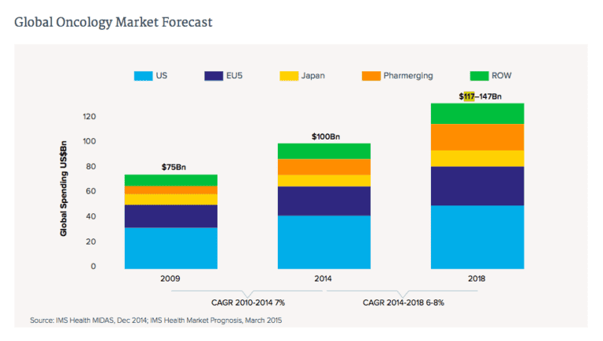

Daryush "Roosh" Valizadeh created ROK in October 2012. You can visit his blog at RooshV.com or follow him on Twitter and Facebook.


In the past year a close friend of mine named Bob was diagnosed with cancer. While I was familiar with the disease, I didn’t know the best way to help him. More than one year later, with his treatment completed, I’m ready to share some advice on what you can do if a friend or relative is diagnosed with the disease.
Cancer is when a specific type of cell within your body, like a lung cell or a blood cell, somehow mutates and starts replicating at a faster rate than normal cells. These mutated cells lose their original function and exist just to multiply and steal resources from normal cells, which is why one of the first symptoms of cancer is fatigue (this was true for Bob).
The cancer cells are initially localized in their own compact ghetto, called a tumor, but if they break off and spread to the rest of the body, the disease becomes “malignant.” The cancer cells now interfere with organ function, eventually causing the person to die.
There is continued debate on what causes cancer, especially since it’s not only becoming more prevalent, but affecting younger populations. Scientific research, which has become increasingly dubious and controlled by money interests, points towards “environment” for being the cause. But which parts of the environment?
We don’t know for sure, but I do know that if vaccines, plastics, GMO food, and food additives were the cause of these increased cancers, we would never find out about it because of the tens of billions of dollars at stake for companies that produce those products. In Bob’s case, he did possess a mutated gene that is linked to a higher cancer rate, but even with a mutated gene, a poor environment can lower the age of disease onset and increase its severity.

Cancer treatment will often include three phases: surgery, chemotherapy, and radiation. Surgery aims to physically remove the tumor and most of the cancer cells, hopefully before they spread. Chemotherapy is a combination of different drugs that aims to kill cancer cells. Radiation uses high energy rays to kill cancer cells at a specific site. It used to be that surgery was the first step but now chemotherapy often starts off the treatment to soften up the tumor and kill straggler cells that can’t be seen when the tumor is removed during surgery.
After Bob consulted with the best doctors in his city, there was a consensus that the treatment sequence should be chemotherapy, surgery, and then radiation. Total time for the entire treatment course was ten months, where Bob’s life would be turned upside down. Wracked with stress from this unexpected diagnosis, I felt it was my duty as a friend to help him through the ordeal.
I crammed as much on cancer as I could, which wasn’t too difficult since I have a degree in microbiology and was already informed on the disease. I was able to confirm that Bob’s treatment was the most modern standard that had the highest chance of increasing his 5-year survival rate, but the more I got into learning about chemotherapy, the more I become concerned because of the incredibly toxic effects it has on the body.
Nearly 100 years ago, on a World War I battlefield in Belgium, soldiers began randomly developing blisters and sores. Some coughed up blood. It turned out that they were poisoned by mustard gas deployed by the Germans, and died weeks later. Thousands of men were killed by the gas during the war.
Upon noticing how efficient the mustard gas kills white blood cells, scientists started testing out the gas against blood cancers. Sixty years later, this drug is still used to treat some cancers, and it was part of the regime for Bob’s chemo treatment. The lobotomy procedure, where an ice pick is jammed in your nose to destroy your frontal cortex, is a newer treatment than some chemo drugs. Not only does chemo have horrible side effects, but it increases your risk of getting other cancers.
We give patients drugs that increase their odds of getting more of the same disease. Let that sink in for a minute. Can you imagine having an infection in your body and taking a drug that may alleviate this infection with the expectation that it will cause a more serious infection in the future at other parts of your body? It’s almost like playing a torturous game of whack-a-mole with your life.
Chemo drugs theoretically kill fast-growing cells faster than normal ones, meaning that it is more likely to kill cancer kills, but there is no mistake that chemo kills all cells. In the middle of treatment, Bob told me that “it feels like I’m dying.” He wasn’t far off. The point of the treatment is to kill all the cancer cells right before the patient would die, because if you continue a chemo cocktail for just a month or two longer than you should, the patient becomes irrevocably disabled or does die, something that can’t be said for most other medical treatments in existence. It was emotional to see Bob lose his hair (even his eyebrows), gain over twenty pounds in water weight, take on a ghostly pallor, and become a weakened shell of his former vigorous self.
I searched for alternatives to chemo, but besides some promising research on massive doses of Vitamin C, all I found were shady sites promoting just about every household product as a cure, including baking soda, lemon juice, and even water. There was also vitamin “cures,” many of which you can find explained without evidence on Youtube. I didn’t have enough conclusive data to tell Bob to ditch the chemo and try something else.
Surgery was straightforward and a far easier ordeal than chemo. They put him on a table, sliced him open, removed all visible sign of the tumor, and patched him back up. Within two weeks he was moving around normally.
Radiation seems easy on paper, since it’s just ten minutes a day of getting zapped by high powered rays for a month or longer. Just like with chemo, however, the side effects accumulate. The skin turns red then purple then black. Then it oozes and makes it extremely difficult to move. But hey, it’s better than chemo. I quickly learned that the term “cancer survivor” is really centered around living through chemotherapy, not surgery or radiation.
What the medical establishment doesn’t tell you is that when someone dies of chemotherapy, they say “the patient died from cancer.” But it was the chemo that actually killed him. As you can tell by now, I was in disbelief that this treatment is used on humans.
Thankfully for Bob, he survived all three rounds of treatment. A recent test showed that he is currently cancer free. I’m thankful for this and can now impart the lessons I’ve learned from his ordeal to help others who are impacted by this disease.
This is what cancer ultimately comes down to:
Anything you do to help someone with cancer should attempt to alleviate the above problems, which fit into the following four roles:
1. Caretaker
2. Doctor buddy
3. Moneybags
4. Philosopher clown
Often reserved for family members, the caretaker does the heavy legwork where the cancer victim lives. They cook, clean, and try to make the sufferer as comfortable as possible. They also monitor for sudden changes in symptoms that may require an urgent call to the doctor, which can typically happen towards the end of chemo when the side effects are most severe.
Action items: do the dishes, take out the trash, do a load of laundry, sweep/vacuum/clean house, cook a big meal that lasts a couple of days, change bed sheets, help sufferer bathe (if needed).
It’s helpful for the sufferer to be chauffeured to the doctor’s and have someone sit with them. If you are close with the sufferer, you can also go in the examination room and fire off questions to the doctor that he is too reluctant to ask (you can be the “bad cop” to ensure the best treatment). I also recommend doing a basic check on the doctor’s treatment protocol with your own research.
Action items: take sufferer to doctor, sit in waiting room, ask questions to doctor, alleviate boredom, run off to get coffee/tea/snacks.
Moneybags writes the checks. Besides the prospect of dying, Bob’s biggest concern was money, even though he had health insurance. It’s not that the out-of-pocket health costs were expensive but the lost income from not being able to work made it hard for Bob to pay existing bills. A donation drive among friends was done to help Bob out along with more direct donations, but even small things like buying a few day’s worth of groceries and filling up the gas tank was a big help to him.
Action items: pay a bill, buy lunch, buy groceries, fill up the gas tank, start a donation drive, ask friends to give money, send a monthly check.
The philosopher clown entertains the sufferer with humor and jokes while throwing in stoic or religious lessons that put the disease in context. For Bob, I tried to steer his mind off worst-case scenarios and focus on the positives of what was going on. You don’t want to let the sufferer slip into a mental slump where they start doubting if it’s worth continuing their existence. If the mind gives up the will to live, the body will soon follow.
Action items: make sufferer laugh, get their mind out of negative thinking, teach helpful beliefs, encourage sufferer that they can successfully complete treatment.
From the above roles, you can see that giving kind words without actionable help is nearly useless to the sufferer. I was disappointed with how many people close to Bob told him empty platitudes on Facebook like “You’ll be okay” and “You’ll beat this” before disappearing. A cancer sufferer will hear these things so many times during treatment that they quickly lose meaning, and they are no substitute for being physically there with the sufferer or sending in some money.
It’s also demoralizing for a sufferer to hear “You’ll be fine” so many times, even from doctors, and then have to experience a setback or problem in cancer treatment, which is likely to happen. If you don’t have a crystal ball that can see into the future, don’t try to predict it.
A better strategy is to be realistic about the current stage of treatment and then offer help. Here are some examples:
Bad: “I believe in you and will pray for you.”
Good: “Only three more infusions to go and then you’re done. We’ll get through this. How can I help?”
Bad: “I know a friend that had a much worse cancer than you and she’s absolutely fine now after drinking a gallon of grapefruit juice.”
Good: “You’re way stronger than I am. Can I buy you lunch or fill up your gas tank?”
Bad: “I’m so sorry this happened to you. I don’t want you to die.” Sobs uncontrollably.
Good: “I’m off on Thursday, let me drive you to to the doctor. Don’t worry, you don’t have to entertain me and can be silent if you want.”
As you can see from the above, words are cheap compared to concrete action. I also saw how people became so depressed about Bob’s illness that he had to lift them up. While it’s nice that people empathized with Bob’s situation, if he had to use his limited energy to be your own psychological coach, you were a burden to him. Don’t bring your own anxieties, fears, and morose attitude to the home of a cancer sufferer. If you’re crying in the sufferer’s presence but he’s not, you’re failing miserably.
A huge problem with cancer treatment is the complete lack of psychological help. While a doctor is more than ready to pump you full of drugs or slice you open, they offer absolutely zero mental guidance for what amounts to the most traumatic episode of your life. You are completely on your own after a cancer diagnosis, and if you don’t have proper mental grounding beforehand, you will have a hard time fighting the disease.
If I get diagnosed with cancer right now, I think I’d be able to understand the disease in relation to my life, but that’s because I’ve been meditating on death for years (I even read a book called Making Friends With Death), all while mastering psychological strategies based on stoicism to deal with suffering. The average person hasn’t done this, so the mental effects of a cancer diagnosis will be just as hard on them as the physical side effects from treatment.
There is also no psychological help after you’re done. They send you out into the world and essentially tell you to call them if you think the cancer came back, but this does nothing to alleviate the intense anxiety in thinking the cancer will ravage you once more. It’s similar to the post-traumatic stress that a soldier has after returning from a war.
Secondly, there is too much financial incentive in the current protocol of treatment for it to change. While I don’t believe a doctor involved in Bob’s care tried to get rich off his disease, the dozens of doctor visits, medical infusions, scans, surgeries, and so on is a lucrative business for everyone involved.
Cancer infusion centers that dispense chemotherapy are starting to look like factories—they are hyper-optimized with the purpose of quickly and efficiently dealing with a huge amount of patients based on established protocols that never rock the boat, and an infusion room I saw with over forty chairs was creepily productive. The care is competent, but Bob was essentially a widget on an assembly line where empathy and love were simulated in bursts but never genuine.
If a cancer cure was discovered today that completely dismantled the cancer treatment system, the medical establishment would have no choice to fight it unless they were ready to lose tens of thousands of jobs and billions in revenue. It may be hard to accept that the medical community values their interests just as much—if not more—as the interests of the patients they took an oath to treat, but unfortunately I believe this to be the case, especially for those at the top of the medical community who have the greatest financial incentive in maintaining the status quo. I trust a doctor no more than I trust a man selling me a used car, as I strongly suspect that the treatment doctors give their patients is not what they would give themselves.
Cancer diagnoses are going up, and so-called scientific experts are flailing their arms in confusion because solving the problem would threaten lucrative sectors of the economy. This means that patients getting cancer treatment right now will be seen in 100 years in the same way we see lobotomy victims today. The current protocol of chemotherapy, surgery, and radiation is too profitable for any paradigm change to be forthcoming, so I expect them to retain this medical standard for the rest of our lives.
I’m extremely skeptical of the current protocol, but I may take chemotherapy if I get cancer. I wouldn’t mind experimenting on a slow-growing tumor with some nutritional experiments, but if I had a fast-growing cancer that already spread to my lymph nodes or beyond, I’d probably go with the mustard gas, even though I know it would probably kill me before the cancer does. The best strategy seems to be not getting cancer in the first place.
Because the incidence of cancer is increasing so quickly, chances are you will have to deal with a diagnosis for someone close to you during your lifetime. I hope you are able to help them through a hellish treatment protocol that will last nearly a year of their life. I was more than happy to help Bob get through his cancer. If it comes back, I told him not to worry, because we’ll do whatever we can to beat it just like we did the first time.
This article was originally published on Roosh V.
Read More: What If Everything They Told You Is A Lie?